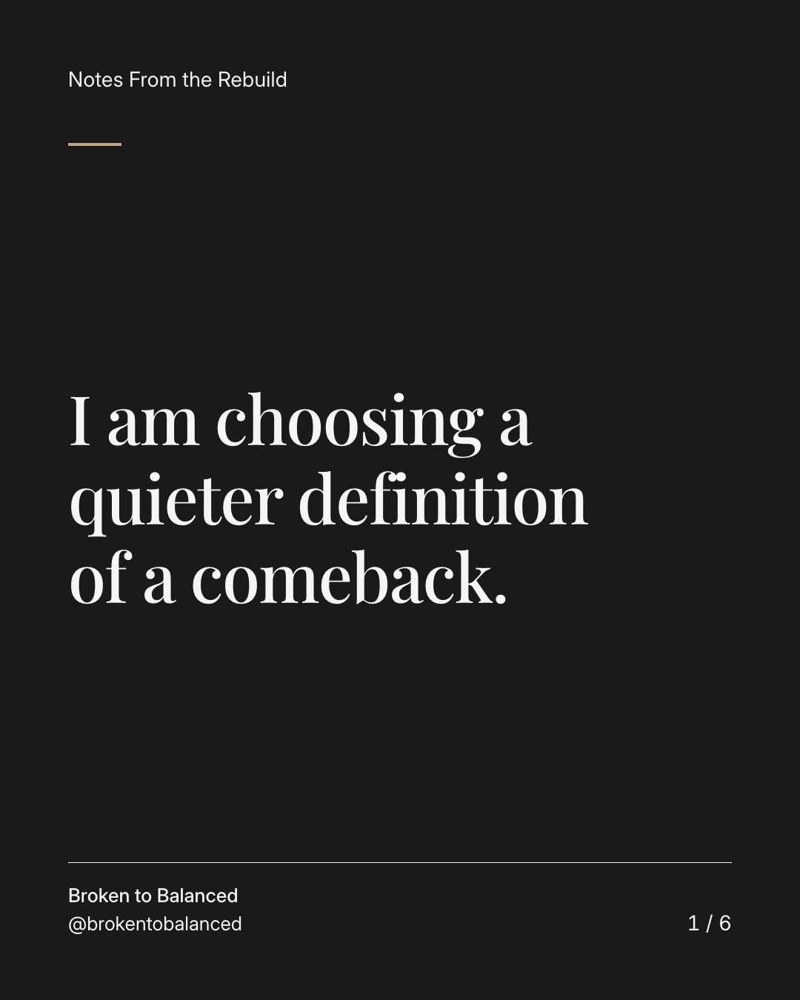
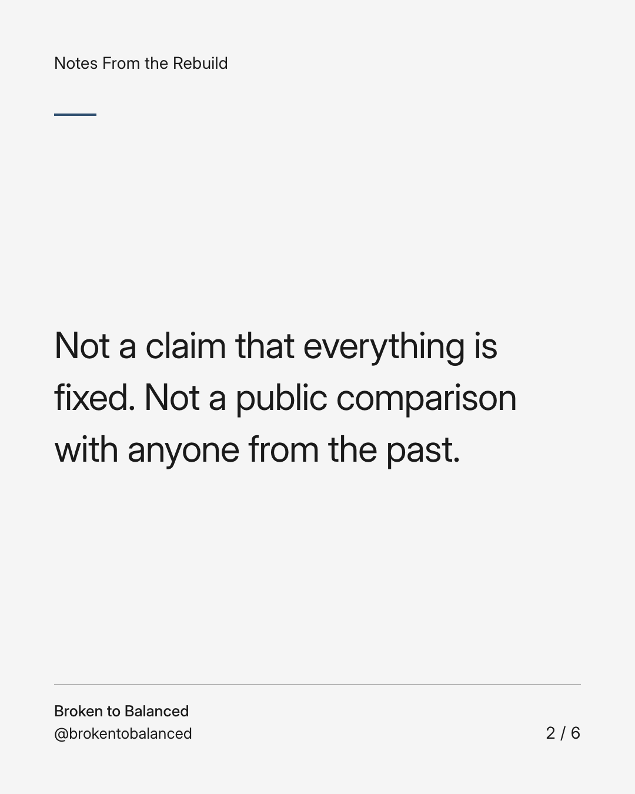
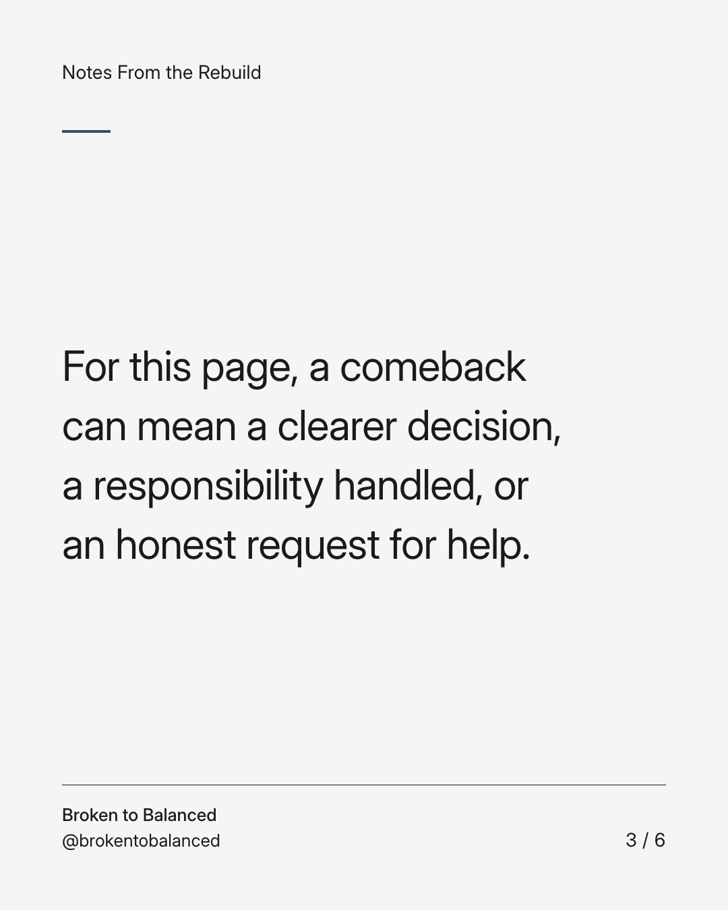
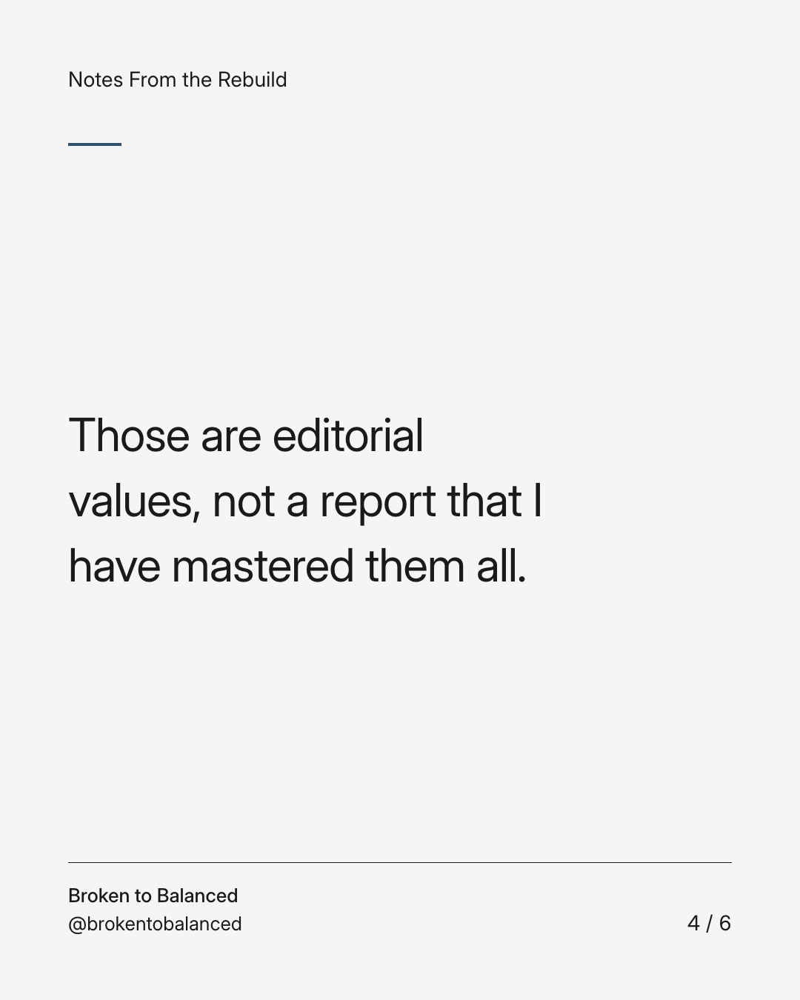
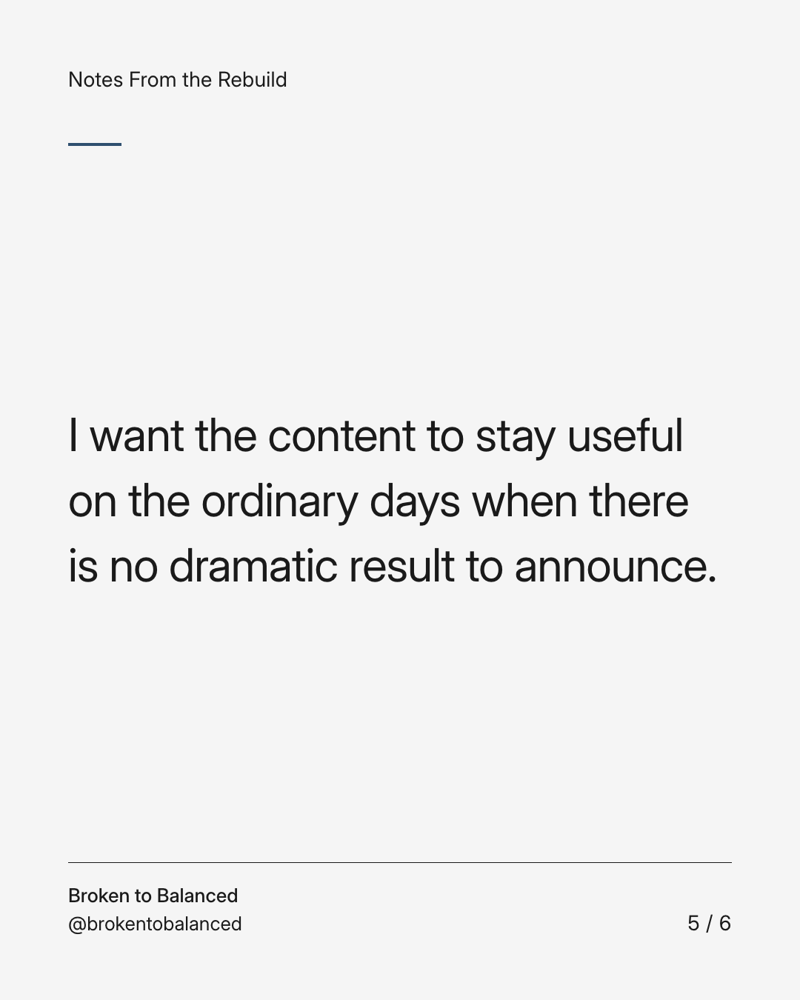
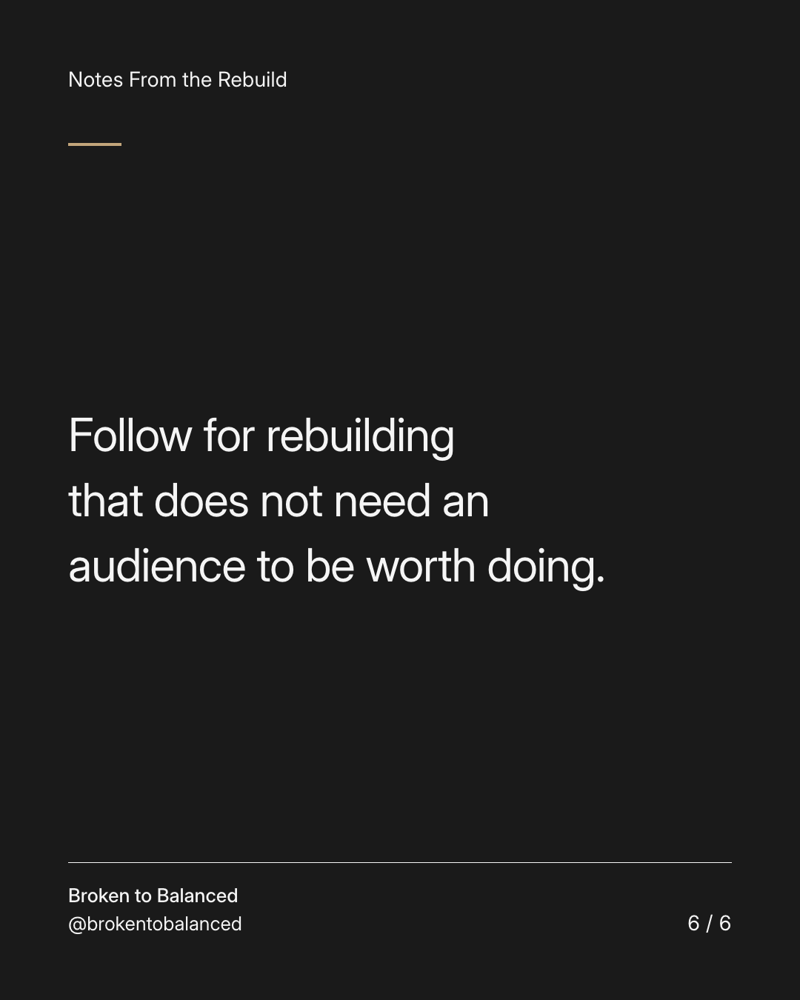

Exact text and accessibility text
I am choosing a quieter definition of a comeback.
Slide 1 of 6. I am choosing a quieter definition of a comeback.


Exact text and accessibility text
Not a claim that everything is fixed. Not a public comparison with anyone from the past.
Slide 2 of 6. Not a claim that everything is fixed. Not a public comparison with anyone from the past.


Exact text and accessibility text
For this page, a comeback can mean a clearer decision, a responsibility handled, or an honest request for help.
Slide 3 of 6. For this page, a comeback can mean a clearer decision, a responsibility handled, or an honest request for help.


Exact text and accessibility text
Those are editorial values, not a report that I have mastered them all.
Slide 4 of 6. Those are editorial values, not a report that I have mastered them all.


Exact text and accessibility text
I want the content to stay useful on the ordinary days when there is no dramatic result to announce.
Slide 5 of 6. I want the content to stay useful on the ordinary days when there is no dramatic result to announce.


Exact text and accessibility text
Follow for rebuilding that does not need an audience to be worth doing.
Slide 6 of 6. Follow for rebuilding that does not need an audience to be worth doing.
Exact caption
Plain-text fallback: select and copy the caption.